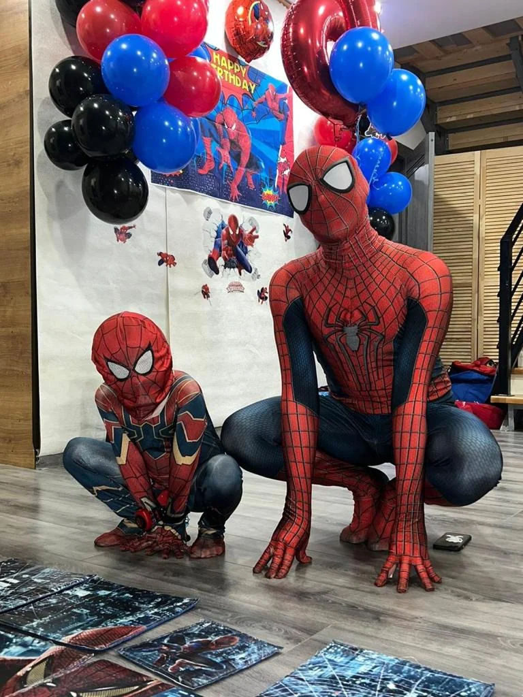
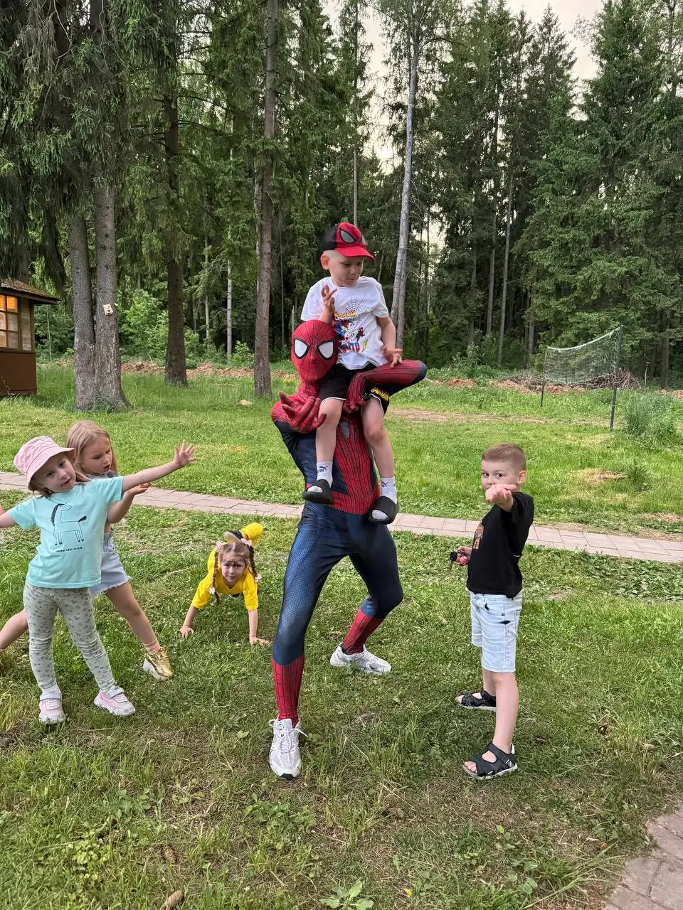
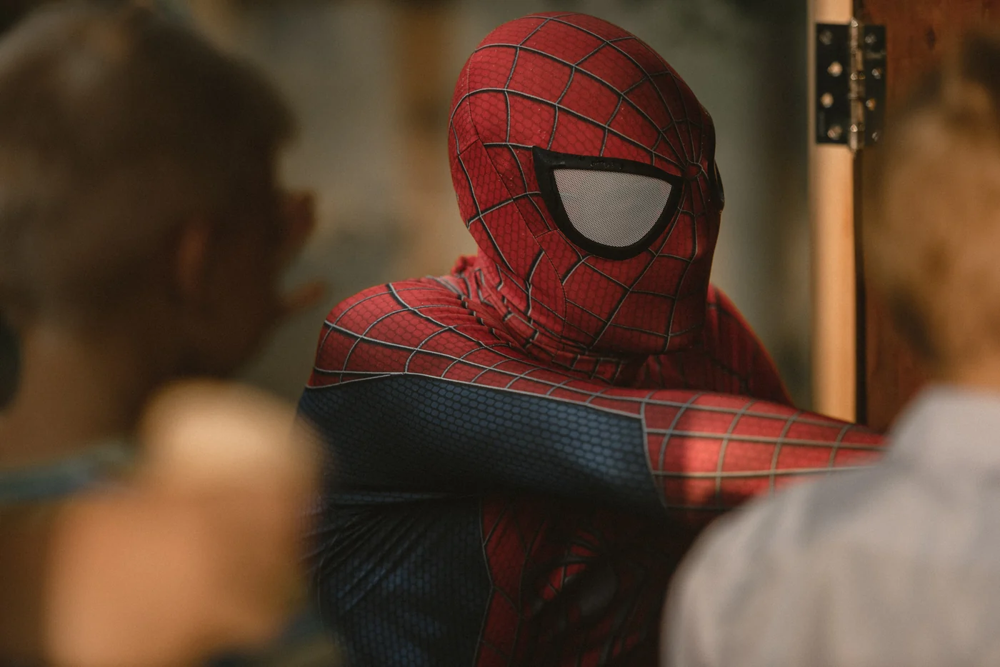
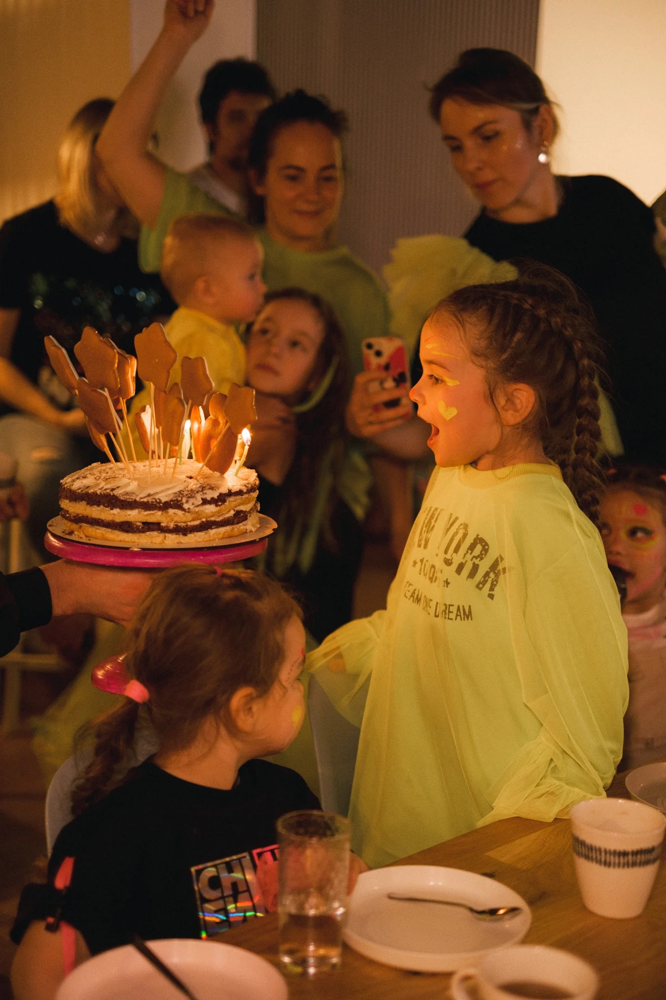
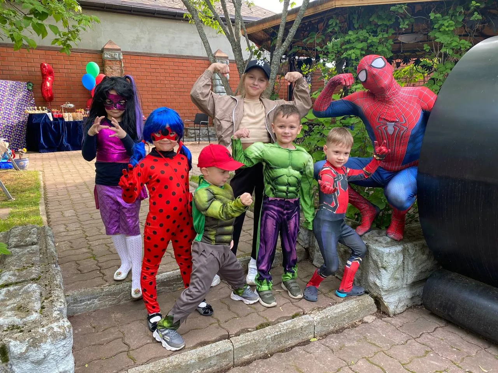
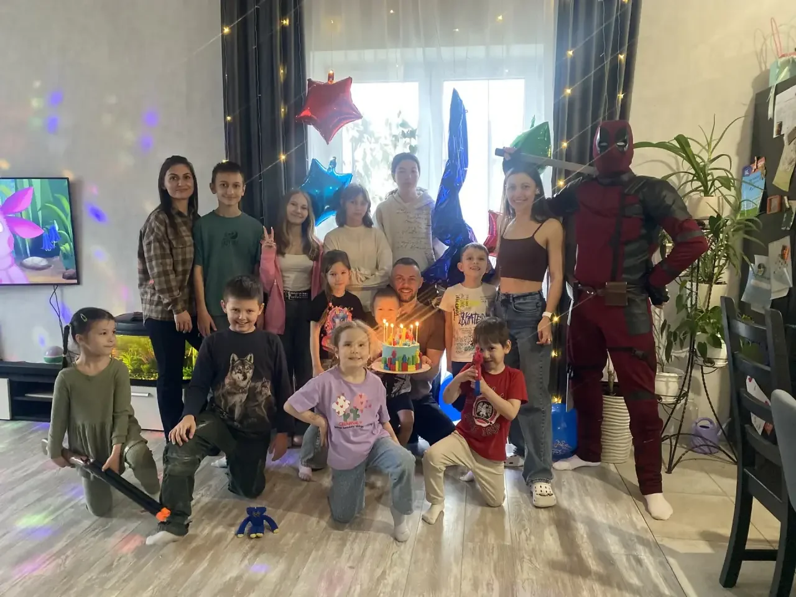
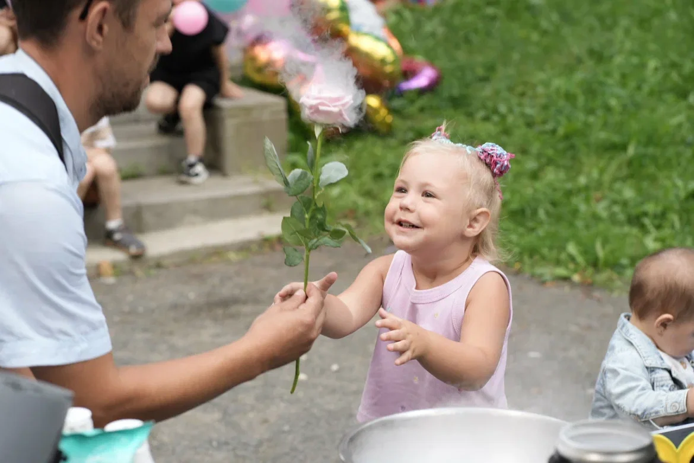
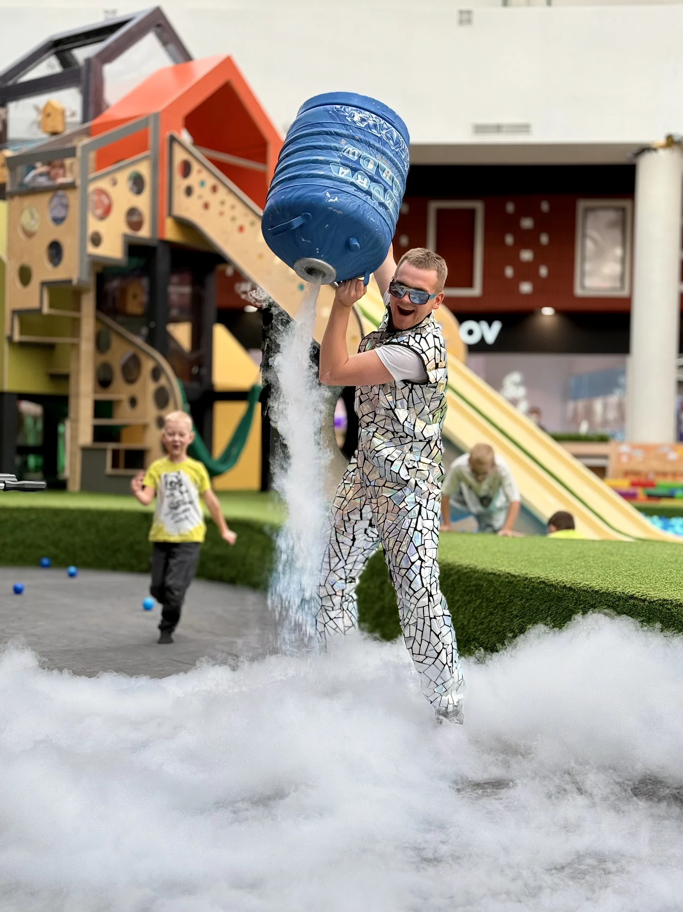
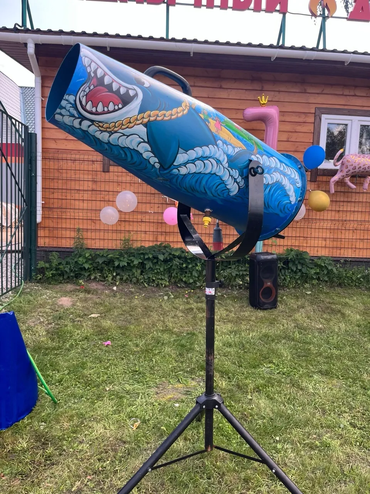

Кадры с программ








Ведущий приходит в образе и ведёт детей по сюжету: у каждой активности есть подводка, поэтому дети не выполняют задания, а помогают герою. В прайсе это описано как «заходящая программа в 99 % случаев» — и отзывы это подтверждают.








Ведущий работает с жидким азотом при температуре −196 °C: облако дыма стелется по земле, из бутыли поднимается вулкан выше человеческого роста.
15 000 ₽
300 литров пенного раствора и тюнингованная пушка в виде акулы — фирменная деталь студии.
15 000 ₽Аппарат с вертикальной подачей, поэтому вата получается объёмной и фигурной, а не тонким комком на палочке.
6 000 ₽Час — минимум, за него герой успевает знакомство и разгон. Полтора-два часа — то, что берут чаще всего: программа успевает набрать плотность, и остаётся время на торт.
Это ростовые и сложные костюмы: Бэтмен, Хагги Вагги, Трансформер, Дэдпул. Они эффектнее выглядят и дороже в обслуживании, поэтому стоят 6 000 ₽ в час вместо 5 500 ₽.
Так бывает у трёх-четырёхлетних. Ведущий не подходит вплотную сразу: сначала машет издалека, потом играет с другими детьми, и через десять минут малыш подтягивается сам. В отзывах это описано прямым текстом.
На компанию до 15 детей хватает одного ведущего. Для пенной вечеринки второй тоже не нужен: пушка запускается дистанционно, и ведущий всё время с детьми.
Напишите, какой праздник и когда — Андрей ответит и скажет, свободно ли время. Отвечает в день обращения.